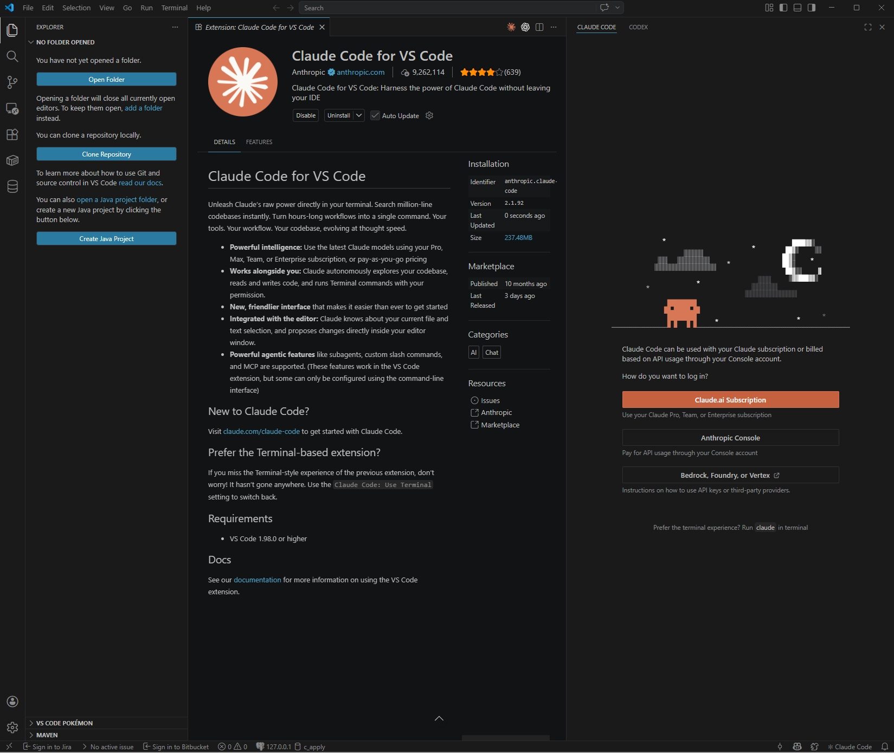
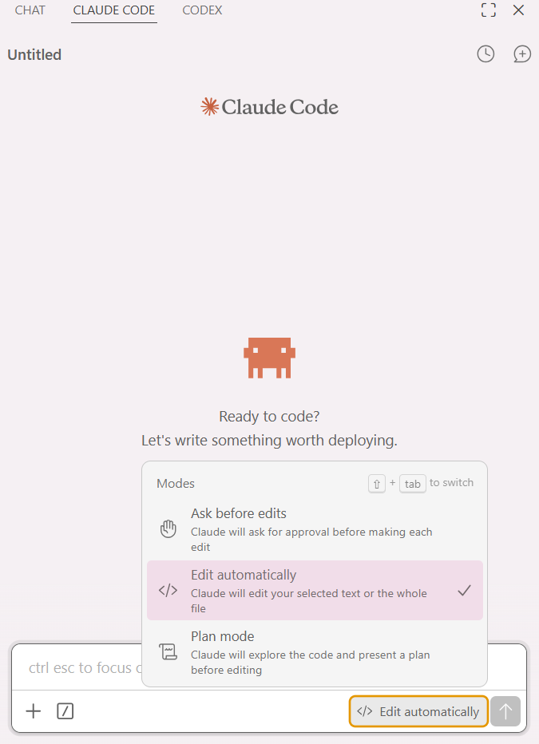
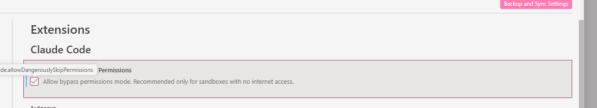
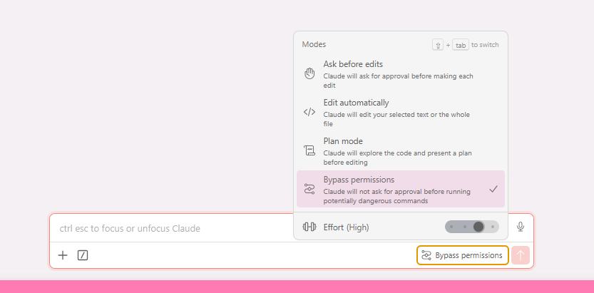

4 · Claude Code 설치¶
이 페이지에서 하는 일
- VS Code에 Claude Code를 설치하고 로그인합니다
- 파일을 고칠 때마다 뜨는 확인 창을 미리 꺼둡니다 (자동 승인)
- 실습 데이터를 내려받아 압축까지 풀어둡니다
오늘 말을 걸 상대인 AI 코딩 에이전트를 설치합니다. VS Code 확장 프로그램으로 설치하면 친숙한 채팅 UI로 바로 시작할 수 있습니다.
1. Claude Code 확장 설치¶
- 아래 링크에서 Claude Code 확장 페이지를 엽니다.
https://marketplace.visualstudio.com/items?itemName=Anthropic.claude-codeVS Code용 설치 버튼을 누릅니다.
 3. VS Code가 열리며 확장 페이지가 뜹니다.
3. VS Code가 열리며 확장 페이지가 뜹니다. Install 버튼을 눌러 설치합니다.

2. 로그인¶
설치가 끝나면 Ctrl+L (맥은 Cmd+L)을 누릅니다. 오른쪽 패널에 Claude Code 화면이 뜹니다. 여기서 Claude.ai Subscription(구독 계정 로그인)을 눌러 로그인합니다. 안내대로 브라우저에서 로그인하면 됩니다.

이렇게 나오면 정상입니다
로그인 후 패널에 입력줄이 뜨고, 말을 걸 수 있는 상태가 됩니다.
이렇게 나왔다면
- 로그인이 더 진행되지 않는다 → 계정 문제일 수 있습니다. 운영진에게 연락하세요. 당일 예비 계정을 받을 수 있습니다.
실습 폴더 여는 법
실습을 시작할 때는 VS Code 왼쪽 상단 Open Folder로 실습 자료가 있는 폴더를 열고, 그 상태에서 Claude Code에 질문하면 됩니다.
CLI 모드로도 쓰고 싶다면 (선택 — 추가 설치 필요)
VS Code 확장으로 설치한 Claude Code는 VS Code 안에서만 쓸 수 있습니다. 터미널에서 좀 더 자유롭게 쓰고 싶다면 CLI 모드를 추가로 설치합니다.
1단계. 검색 창에 명령 프롬프트를 입력해 실행합니다.
2단계. 아래 명령을 입력하고 Enter (Windows 기준).
bash curl -fsSL https://claude.ai/install.cmd -o install.cmd && install.cmd && del install.cmd
3단계. 아래 명령으로 버전이 출력되면 설치 완료입니다.
bash claude --version
Installation complete! 가 떴는데도 버전이 안 나오면, 명령 프롬프트를 닫았다가 다시 열어 claude --version 을 입력해보세요.
3. 확인 창 미리 꺼두기 (자동 승인)¶
AI가 파일을 고칠 때마다 "이 파일을 수정해도 될까요?" 하고 물어봅니다. 오늘 하루는 파일을 수백 번 고치므로, 미리 꺼둡니다.
VS Code 오른쪽 Claude Code 패널 하단의 모드 드롭다운에서 Edit automatically를 고릅니다.

| 모드 | 동작 |
|---|---|
Ask before edits |
고칠 때마다 물어봅니다 (기본값) |
Edit automatically |
파일 편집은 자동, 터미널 명령은 여전히 확인 —오늘 이걸 고르세요 |
Plan mode |
고치기 전에 계획을 먼저 보여줍니다 |
고르고 나면 입력창 오른쪽 아래에 Edit automatically 라벨이 뜹니다.
터미널 명령까지 자동으로 넘기고 싶다면 (선택)
실습 4에서 화면을 여러 번 다시 만들 때 조금 더 편합니다. 다만 켜지 않아도 오늘 실습은 전부 진행됩니다.
1단계. VS Code 왼쪽 아래 톱니바퀴 → Settings (Ctrl+,)

2단계. 왼쪽 트리에서 Extensions → Claude Code

3단계. 맨 위 Allow Dangerously Skip Permissions 체크박스를 켭니다

4단계. Claude Code 패널 하단 드롭다운에서 Bypass permissions 선택

이 설정은 승인 없이 명령을 실행하게 합니다. 오늘 쓰는 실습 폴더에서만 쓰고, 회사 자료나 개인 파일이 있는 폴더에서는 켜지 마세요.
강의가 끝난 뒤 되돌리는 법
| 되돌릴 것 | 방법 |
|---|---|
| 자동 편집 | 모드 드롭다운에서 Ask before edits로 되돌립니다 |
| 명령 자동 실행 | Settings → Extensions → Claude Code → Allow Dangerously Skip Permissions 체크 해제 |
평소 작업 폴더에서는 되돌려 쓰시길 권합니다. 실수로 지운 파일을 되살릴 방법이 없는 경우가 있습니다.
4. 데이터 내려받고 압축 풀기¶
홈 화면의 내려받기 표에서 전체 zip을 받습니다.
압축을 풀 위치가 중요합니다.
바탕화면에 풀지 마세요
경로에 한글이나 띄어쓰기가 섞이면 도구가 파일을 못 찾는 일이 실제로 생깁니다.
윈도우: C:\workshop\ / 맥: ~/workshop/ 에 푸세요. 폴더가 없으면 직접 만드세요.
이렇게 나오면 정상입니다
workshop폴더 안에lab1lab2lab3lab4lab5다섯 폴더가 보입니다lab1폴더를 열면발송내역.xlsx,청구서_A택배.csv,요금안내문폴더가 보입니다
이렇게 보인다면
- 폴더 안에 같은 이름 폴더가 또 있다 → 안쪽 폴더가 진짜입니다. 안쪽 것을
workshop아래로 옮기세요 - 한글 이름이 깨진다 → 다른 압축 프로그램(반디집·알집 등)으로 다시 푸세요
다 됐는지 스스로 확인하기¶
- VS Code에서 Claude Code 패널이 뜨고, 로그인 화면 없이 말을 걸 수 있다
- 터미널에서
python --version·node --version이 숫자를 답한다 - Claude Code 패널 아래에
Edit automatically라벨이 보인다 -
C:\workshop\(맥은~/workshop/) 안에lab1~lab5폴더가 있다
여기까지 됐으면 세팅 완료입니다.